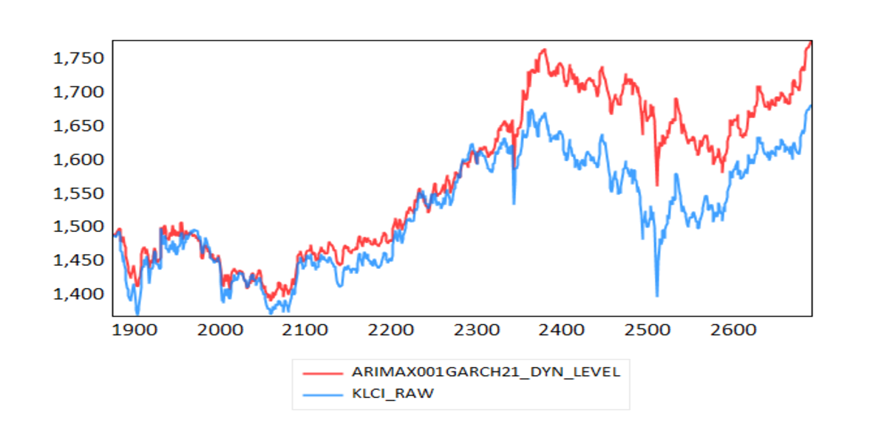
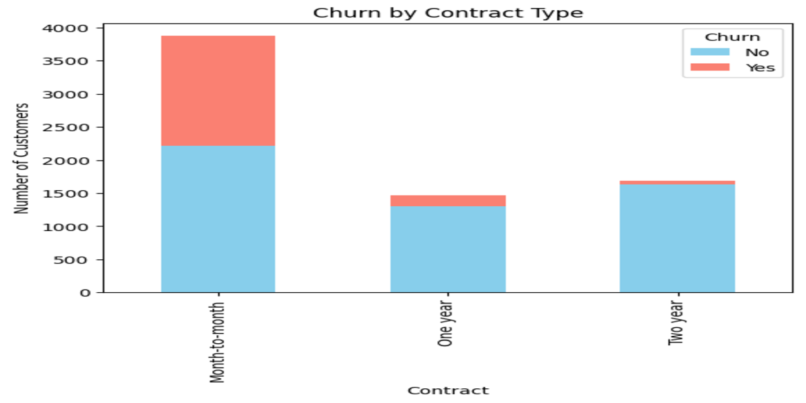
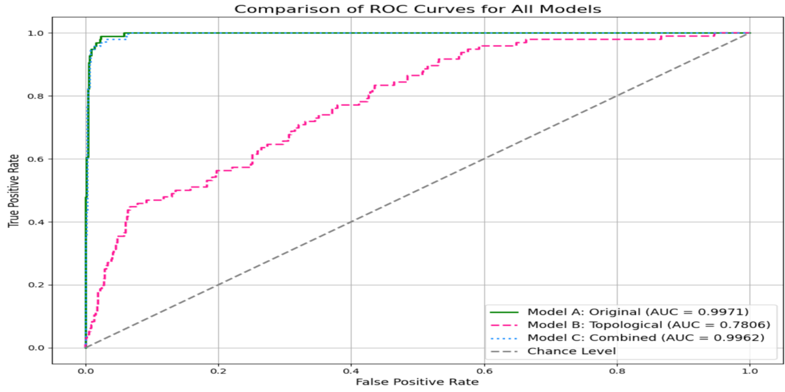

Aspiring Data Analyst | Applied Statistics (Hons.) Graduate
I am a Bachelor of Applied Science (Applied Statistics) (Hons.) graduate with experience in data analysis, statistical modelling, machine learning, and forecasting. Passionate about transforming data into actionable insights, I have hands-on experience with Python, R, SQL, Excel, EViews, and analytical tools through academic and independent projects.
Beyond my academic background, I continuously strengthen my analytical skills through personal projects and self-learning, applying statistical and machine learning techniques to solve real-world problems.
Programming: Python, R, SQL, C++
Data Analysis & Visualization: Pandas, Matplotlib, Excel
Statistical Modelling: Time Series Forecasting, Regression Analysis, Machine Learning, Volatility Modelling
Tools: EViews 13, Minitab

Tools: EViews 13 | ARIMAX | GARCH | EGARCH
Developed and evaluated 8 time series forecasting models using 2,690 daily KLCI observations from 2015–2025. Incorporated returns from the Top 10 KLCI constituent companies as external predictors to improve forecasting performance.
Results:
• Achieved RMSE of 69.21 and MAPE of 3.35% for dynamic price forecasting.
• Reduced forecasting error by 28.3% compared with ARMA-GARCH.
• Selected ARIMAX(0,0,1)-GARCH(2,1) with Student’s t-distribution as the best out-of-sample forecasting model.

Tools: Python | SQL | Pandas | Matplotlib | Seaborn
Analyzed 7,032 customer records using Python and SQL to identify churn patterns, customer segments, and factors influencing customer retention.
Results:
• Identified 26.6% overall customer churn rate.
• Identified fiber optic users as the highest-risk segment with 42% churn rate.
• Analyzed customer segments and service factors to identify churn drivers.

Tools: Python | Scikit-learn | Imbalanced-learn | Gudhi
Led a team of 5 members in developing machine learning models to predict personal loan acceptance using 5,000 customer records, including data preprocessing, feature engineering, and model evaluation.
Results:
• Achieved AUC of 0.997 and F1-score of 0.92 using Random Forest.
• Compared traditional features and TDA-based features to evaluate feature engineering effectiveness.
Tools: ARENA Simulation
Led a team project to model and simulate a cafe queuing system using ARENA software. The project analysed customer flow, identified service bottlenecks, and evaluated resource optimization strategies.
Results:
• Reduced pickup waiting time by 94.18% (84.03 to 4.89 minutes).
• Increased completed orders from 31 to 52 customers through resource optimization.
Email: jannatulaisyah03@gmail.com
GitHub: github.com/JannatulAisyah
LinkedIn: linkedin.com/in/jannatulaisyahh